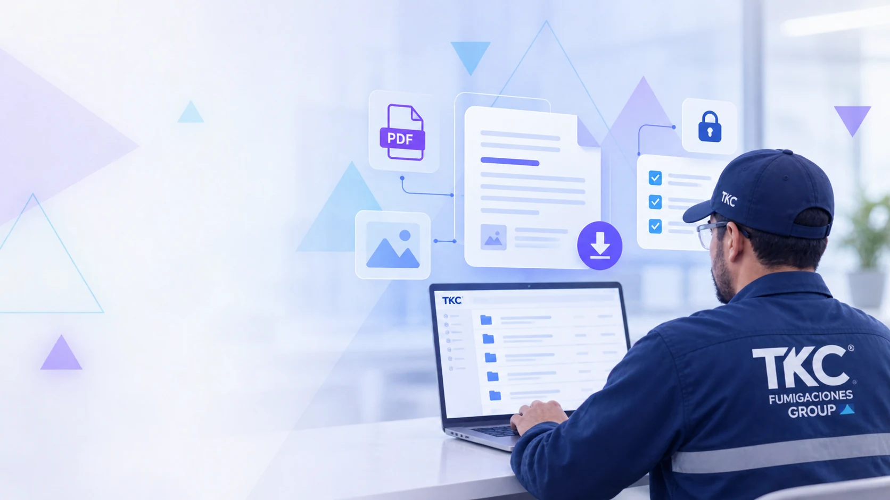

Diagnóstico
Conocemos las condiciones de la instalación y la necesidad identificada para determinar el alcance del servicio.
Conocemos la necesidad, definimos las acciones y damos continuidad a cada intervención de acuerdo con el alcance del servicio.
Solicitar asesoríaAtendemos empresas, instituciones y organizaciones de todos los sectores económicos. Cada instalación tiene condiciones, dinámicas y necesidades particulares que orientan el diagnóstico y el plan de trabajo.
Nuestra experiencia abarca distintos entornos de producción, comercio, servicios e infraestructura. La selección de actividades depende de la necesidad identificada, las características del espacio y el alcance acordado.
La ruta reúne las etapas que orientan nuestro trabajo. Las actividades, su frecuencia y la continuidad del acompañamiento se definen según el servicio contratado.
Conocemos las condiciones de la instalación y la necesidad identificada para determinar el alcance del servicio.
Establecemos las actividades, controles y condiciones necesarias para desarrollar la intervención.
Realizamos las actividades definidas de acuerdo con las características de cada instalación y el plan de trabajo.
Observamos la evolución de las condiciones intervenidas y los hallazgos que puedan presentarse durante el proceso.
Realizamos seguimiento a las actividades ejecutadas para verificar su desarrollo y continuidad.
Registramos las actividades realizadas, los hallazgos y las evidencias necesarias para mantener la trazabilidad del servicio.
Damos continuidad al proceso mediante seguimiento y orientación, de acuerdo con las necesidades identificadas y las condiciones del servicio.

La documentación permite consultar las actividades desarrolladas y los hallazgos registrados. Según el alcance del servicio y los accesos habilitados, esta información puede consultarse a través de IGEO.
Ingresar a Zona ClientesCuéntenos qué requiere y conozca cómo podemos acompañarle desde el diagnóstico hasta el seguimiento correspondiente a su servicio.